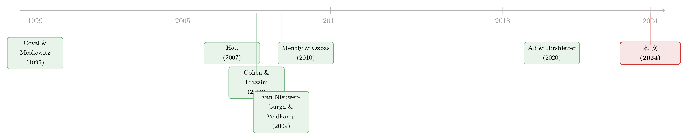

被「同一批股东」拖慢的消息：当机构持股反而让信息扩散得更慢
本文读的是 Jie Ying (2024, Journal of Financial Economics)：长期以来人们相信，机构投资者持股越多、信息在相关公司之间扩散得越快；但作者用一个从 13F 持仓「反推」公司联系的新度量证明，由同一批集中持股的机构共同持有的公司，反而存在更慢的信息扩散——基于这种「共同所有权」(common institutional ownership, CIO) 构造的同行动量策略，年化 alpha 超过 12%，强过 Ali and Hirshleifer (2020) 的分析师共同覆盖动量。而且，这个异象主要来自那些只持有少数股票、低换手、把分散化外包给 ETF 的机构。
1 一个被讲反了的故事
先讲一个几乎写进教科书的共识。
「渐进式信息扩散」(gradual information diffusion) 是行为金融里一条很稳的实证规律：如果两家公司在经济上相关——同属一个行业、有上下游供货关系、共享一种生产技术、地理上挨着——那么 A 公司的利好消息往往不会当天就被 B 公司的股价吸收，而是慢半拍地渗透过去。于是你能在 A 的滞后收益里，预测出 B 的当期收益。这种正的序列交叉相关 (cross-predictability)，在按行业 (Hou, 2007; Cohen and Lou, 2012)、按上下游链条 (Cohen and Frazzini, 2008; Menzly and Ozbas, 2010)、按技术 (Lee et al., 2019)、按地理 (Parsons et al., 2020) 切分的各种「同行」上反复被找到。
那么，是谁在拖慢这条扩散链？通常的答案是：散户的注意力有限、信息处理能力不足。顺着这个逻辑，自然就有了下一个推论——机构投资者来了，扩散就会变快。机构更专业、更勤勉、信息更充分；当他们同时持有两只相关的股票时，理应一手把这边的消息搬到那边去。文献也确实是这么发现的：Cohen and Frazzini (2008) 和 Menzly and Ozbas (2010) 都指出，随着共同机构持股 (CIO) 的上升，交叉可预测性会消退。机构持股比例越高，同行动量越弱。
故事讲到这里，干净利落：机构是信息扩散的「润滑剂」。
但本文作者偏要追问一句：共同机构持股，真的总是让信息扩散得更快吗？
接着，一个被几乎所有人忽略的事实浮出水面。
2 机构投资者，其实一点都不「分散」
我们脑子里的机构投资者，是手握成百上千只股票、紧贴基准、被合规要求逼着充分分散的庞然大物。如果真是这样，那「共同持股」就什么都说明不了——两只股票被同一只指数基金同时持有，毫无信息含量，因为这只基金把整个市场都买了。
可 SEC 的 13(f) 申报文件讲的是另一个故事。如图所示（作者的 Fig. 1），1980–2017 年间，约四分之一的美国机构投资者平均只持有不到 20 只本土普通股；另有四分之一持有超过 140 只。一半以上的机构，持股数少于 60 只——远低于一个「充分分散」的组合所需要的数目。更刺眼的是趋势：从 1980 到 2017，机构投资者的数量增长了 8 倍多，但他们持股数的中位数却从 100 跌到了 60，与此同时组合里 ETF 的占比急剧上升。
机构在主动地把自己关进一个很窄的股票池里。
为什么？这并不是非理性。van Nieuwerburgh and Veldkamp (2009, 2010) 早就给过一个漂亮的理论：在信息有成本的世界里，理性投资者应当把注意力集中在自己有信息比较优势的那一小撮资产上。覆盖一大堆互不相关的公司，要雇更多分析师、做更多行业研究，成本高昂；而盯住一小簇彼此相关的公司，反而事半功倍。至于「分散化」这个需求，机构有更省钱的办法——把它外包出去，比如直接买 ETF。
于是关键的一步出现了：如果机构是有选择地、按「信息优势」去集中持股，那么被同一批集中型机构共同持有这件事本身，就泄露了一条经济联系。这条联系，比「同属一个 SIC 行业」要精细得多、也隐蔽得多。作者举的例子很传神：2007–2017 年间，投资了 Spirit AeroSystems（波音的主要供应商之一）的机构里，有 76.3% 也持有波音的股票，而只有 39.1% 同时持有 Papa John's（一家比萨连锁）。波音和它的供应商，被「同一批人」攥在手里。
3 把公司之间的联系，从持仓里「称」出来
那么，怎么把这条隐蔽的联系量化？这是全文的支点，值得慢慢说。
作者构造了一个共同所有权度量 (common ownership measure)。核心思想很朴素：两家公司 i 和 j 的联系强度，等于「同时持有它们俩的机构」的一个加权计数——但权重不是 1，而是与该机构持股数量反向。一个只持有十几只股票的机构同时买了 i 和 j，这是强信号；而一个持有上千只股票的指数基金同时持有 i 和 j，几乎什么都不说明。
形式上，可以把它写成下面这个带权计数（其中 \(\Omega_i\) 表示持有股票 \(i\) 的机构集合，\(N_k\) 是机构 \(k\) 的持股数量）：
这个写法和作者在 Fig. 3 里的算例完全吻合。设有四家公司 A、B、C、D 与三个投资者：投资者 1 持有 A、B、C（\(N=3\)），投资者 2 持有 A、C、D（\(N=3\)），投资者 3 持有 A、B（\(N=2\)）。于是
$$CO_{A,B}=\frac{1}{3-1}+\frac{1}{2-1}=0.5+1=1.5,\quad CO_{A,C}=\frac{1}{3-1}+\frac{1}{3-1}=1,\quad CO_{A,D}=\frac{1}{3-1}=0.5.$$
从 A 的视角看，B 与它最近、C 次之、D 最远。
注意这个度量未必对称：A 被推断为与 C「最相关」，但反过来对 C 而言最相关的未必是 A——因为每家公司的邻居是按它自己的口径排序的。指数基金式的「人人都持有」会往里掺噪声，但只要它持有的是一篮子随机的、不相关的股票，带来的就只是噪声、而非系统性偏误（作者在脚注里专门论证了这一点：同一只指数基金内部的变动不会制造横截面上的异质联系）。
用这个度量回头看波音的例子：Spirit AeroSystems 与波音的共同所有权是 0.368，是它与 Papa John's（0.070）的四倍多。一个静态的行业分类，是绝对画不出这条线的。
4 它们的基本面，真的一起动吗
度量造好了，接着一个自然的问题是：被同一批机构持有的公司，基本面真的彼此相关吗？还是说这只是持仓上的巧合？
作者去查了这些公司在销售额、毛利、研发 (R&D) 支出、总资产上的年度增长率，发现它们之间存在一系列显著的同期相关与领先—滞后 (lead-lag) 关系。更重要的是稳健性：在控制了基于 SIC、基于 10-K 文本 (Hoberg and Phillips, 2016) 的行业趋势、以及基于分析师共同覆盖 (Ali and Hirshleifer, 2020) 的同行趋势之后，这些正相关依然在经济上和统计上显著。而且，共同持股公司之间的领先—滞后关系，比公司与其行业同行、分析师关联同行之间更稳健。
换句话说：机构盯住的「相关」，比行业分类和分析师覆盖所定义的「相关」更紧、更真。
5 反转：一个年化超 12% 的异象
如果基本面是慢慢一起动的，而股价又慢半拍地反应消息，那就一定能交易出来。
作者据此构造 CIO 动量 (CIO momentum)：对每只股票，算出它的「共同所有权同行」上个月的基准调整后收益 (benchmark-adjusted return) 的加权平均，作为它本月收益的预测因子。
这里有个值得停一下的细节：交叉可预测性的研究历来用原始收益，作者却用基准调整后收益，理由有二——其一，基准调整后的收益更能捕捉公司特有的消息，而非共同的风险溢价；其二，它能削掉机构「指数化」操作带来的噪声，因为被风险因子定价得更充分的股票，恰恰是机构倾向于被动持有的那些。
结果相当可观：无论是市值加权还是等权，基于 CIO 动量的多空套利组合在各种资产定价模型下都产生了年化超过 12% 的 alpha。而且，这些组合的累计收益在随后 12 个月里没有任何反转的迹象——这一点至关重要。因为如果这只是机构调仓造成的「过度共动」（Anton and Polk, 2014; Gao et al., 2017），那市场迟早会纠偏、收益会反转回来。没有反转，说明这是货真价实的渐进式信息扩散，而不是泡沫的回吐。
然后是最硬的一仗：与 Ali and Hirshleifer (2020) 的分析师共同覆盖动量正面对决。后者曾被证明能「吸收」其他所有的同行动量，是这条赛道上的最强基准。跨期检验 (spanning test) 显示，CIO 动量的预测力强过行业动量和分析师共同覆盖动量。两者高度相关，但 CIO 动量更擅长识别表现最好的那一批股票：在按分析师动量排序的最高五分位里，CIO 动量的多空策略仍能赚到显著 alpha；反过来却不行。
（关于「同行」如何被切分、以及一只股票可能同时属于强邻和弱邻的多张网络，可参见《强邻、弱邻，和你站的位置：被「折叠」起来的同行效应》；关于用债券市场的经济联系做同样的交叉预测，可参见《评级一起动，股价却慢半拍——藏在债券市场里的「经济联系」》。）
6 真正关键的一步：到底是谁拖慢了消息
到这里，故事其实已经反转完成：机构持股不一定加速扩散，CIO 还能造出一个强异象。但本文最有价值的部分，是它没有停在「异象存在」，而是把矛头对准了机制——到底是哪一类机构在拖后腿？
作者从三个角度切入，结论高度一致地指向集中型机构。
第一，把机构按持股数拆开。 交叉可预测性主要由持股较少（尤其是少于 150 只）的机构驱动。这些更聚焦的机构，往往是规模较小的资产管理人，他们把更多投资外包给 ETF 和封闭式基金。持股数越少，「主动权重」(active weight, Doshi et al., 2015) 越高、行业 HHI 越集中，而组合换手率（churn rate, Gaspar et al., 2005; Yan and Zhang, 2009）越低。按 Bushee and Goodman (2007) 的分类，这些聚焦型机构更可能是「专注型」(dedicated) 投资者，而非「短暂型」(transient) 或「准指数型」(quasi-indexer)。一句话：低换手、把分散外包、盯住一小簇股票的机构，是这个异象的源头。 当把这些集中型机构从样本里剔除，异象收益就显著下降；而持股更多、更分散的机构，反而加速了信息扩散。
第二，看机构的交易反应。 整体上，机构会在好的同行动量出现时增持、坏动量出现时减持，这与 Cohen and Frazzini (2008)、Menzly and Ozbas (2010) 一致。但作者用一个三维数据结构（投资者—日期—股票）做了一个更细的回归，逼出了一个尖锐的事实：机构只会根据自己组合里也持有的那些同行的动量去交易一只股票，而无视那条由「其他机构的共同持股」所定义的同行动量。这种选择性注意 (selective attention)——你只看自己盘子里的菜——正是相关信息无法被充分、及时地定价的原因。
第三，按机构持股比例分组。 多空策略在「被低换手、低集中度的分散型机构高比例持有」的股票上，alpha 显著更低。这恰好与前两条对上：分散型机构在哪里，扩散就快、异象就弱。
这里有一处微妙的反直觉，值得点明：它并不和 Cohen and Frazzini (2008) 等前人结论矛盾，反而把它们调和了。前人说「机构持股越多、同行动量越弱」——没错，但那个「机构」指的是分散型机构。本文的贡献是把机构拆开：分散型机构确实是润滑剂，而集中型机构是阻尼器。两股力量方向相反，过去被笼统地平均掉了。
作者还诚实地交代了一个数据上的局限，并把它变成了又一个检验。季度末的持仓快照，只能看到机构已经买入的股票，看不到它们研究过却尚未买入的标的；这导致基准五分位组合的收益左偏，因为快照里混进了机构下季度打算卖掉的高估股票，却没捕捉到它们打算买入的低估股票。为验证这一点，作者按机构上季度是增持还是减持把共同所有权拆开：基于「买入—CIO」动量的组合收益右偏，基于「卖出—CIO」的则左偏;而当用「抛售—CIO」动量时多空策略直接失效——说明机构在认为一只股票不再相关时，会把它清出组合。这反过来又印证了那个核心度量：持仓的确编码着公司之间动态的、会调整的经济联系。
7 文献脉络
把这篇论文放回它的来路，线索其实很清晰。
最早的一支，是行为金融对「渐进式信息扩散」的实证检验：Hou (2007) 在行业内部找到了领先—滞后效应，Cohen and Frazzini (2008) 沿着上下游供应链做出了经典的客户动量，Menzly and Ozbas (2010) 把它推广到市场分割下的交叉可预测性。这一支的共同潜台词是：机构持股能缓解这种摩擦、加速扩散。
另一支，是关于投资者为什么集中持股的理论与证据。van Nieuwerburgh and Veldkamp (2009, 2010) 提出了信息驱动的集中组合理论，为「理性投资者应当聚焦于有信息优势的资产」给出了微观基础；与之呼应的，是大量记录机构按行业 (Kacperczyk et al., 2005)、按地理 (Coval and Moskowitz, 1999) 偏好持有相关股票的实证。

到 Ali and Hirshleifer (2020)，同行识别的接力棒交到了「分析师共同覆盖」手里，并被证明能吸收其他同行动量——这成了本文要超越的最强基准。本文 (Ying, 2024) 的位置，就在这两支的交汇处：它借用第二支的「集中持股」事实，去推翻第一支「机构总是加速扩散」的默认假设，并造出一个比 Ali–Hirshleifer 更强的同行度量。它的新意不在于又找到一个异象，而在于指认了拖慢扩散的那一类特定机构。
（顺带一提，本文反复强调的「被动化、外包给 ETF」这个大背景，与《你以为被动投资只占 16%？它其实是这个数的两倍》讲的是同一股潮水；而「谁在持有，决定了价格」的逻辑，在债券市场也有平行的版本，见《谁在持有这张债券，决定了它的价格》。）
8 评论与延伸（Q&A + 研究方向）
(a) 几个可能的疑问
Q：这个 CIO 度量，和「共同所有权」文献里讨论反垄断的那个 common ownership 是一回事吗？
不是。反垄断文献里的共同所有权，关心的是同一批股东同时持有竞争对手会不会软化竞争，落点在产品市场和公司治理。本文借用了「同一批机构持有两家公司」这个观察，但目的完全不同：它把共同持股当作一台探测器，去反推公司之间隐蔽的经济联系，落点在信息扩散和股票收益的交叉可预测性。
Q：12% 的年化 alpha 听起来太大了，会不会只是又一个挖出来的、交易成本一吃就没的异象？
这是最该警惕的地方，作者也做了几道防线：组合在投资组合检验中剔除了微盘和纳盘股（NYSE 分位的底部 10%）、剔除了价格低于
$5的股票，这削弱了「全靠流动性最差的小票」的担忧；用基准调整后收益也压低了纯风险溢价的成分。但换手成本本身论文正文里我没看到一个明确的净 alpha 数字，这是读者需要自己存疑的地方——尤其因为异象恰恰来自低换手的机构所持有的、可能本身就不便宜交易的股票。
Q：既然集中型机构「更聪明、更聚焦」，为什么反而是他们拖慢了扩散？这不矛盾吗？
不矛盾，关键在「选择性注意」。聚焦型机构对自己盘子里的股票反应很快，但他们不会去交易那条由别人的共同持股定义的同行动量——因为那不在他们的视野里。聪明和聚焦，恰恰意味着他们主动忽略了组合之外的相关信息。低换手、被动、把分散外包，又让他们即便注意到也不急着动手。
Q：会不会是因果倒置——不是共同持股揭示了联系，而是机构看到两只股票一起涨才去同时买？
这是识别上的核心担忧。作者用两点回应：一是基本面（销售、毛利、研发、总资产增长）的领先—滞后关系，在控制行业和分析师同行后依然成立，说明联系是真实的基本面联系、不只是收益共动；二是收益没有后续反转，排除了「机构抱团买出来的过度共动随后回吐」这一解释。不过，持仓和收益之间的内生性仍是这类研究天然的软肋。
Q：和 Ali–Hirshleifer (2020) 的分析师共同覆盖动量到底差在哪？
直觉上，分析师覆盖是「谁在研究这两家公司」，而 CIO 是「谁在真金白银地同时持有这两家公司」。作者论证后者捕捉的联系是多维、时变的（机构按最新信息动态调仓），且机构被高信息不对称的错误定价股票吸引，而分析师的覆盖选择本身带有偏误 (McNichols and O'Brien, 1997; Firth et al., 2013)。实证上，CIO 动量在分析师动量的最高分位里还能再榨出 alpha，反之不行。
Q：用季度末快照会不会严重低估异象？
会，而且方向是保守的。快照看不到机构「研究过却没买」的股票，使基准组合左偏。作者把这个局限变成了一个检验：拆成增持/减持后，买入—CIO 右偏、卖出—CIO 左偏，抛售—CIO 让策略失效——这些都和「机构主动管理一篮子相关公司」的故事一致。真实（更高频）的持仓数据下，异象可能更强。
(b) 几个可能的研究问题与提案
1. 把这套「共同持股探测器」搬到公司债市场
【经济故事】债券市场的信息扩散比股票更慢、做市更分散，且机构（保险、债基）的持仓本身就高度集中于特定信用簇。如果「被同一批集中型债券机构持有」能像在股票里一样反推出发行人之间的隐蔽联系，那 CIO 债券同行动量可能比评级或行业更能预测信用利差的变动。 【可行性】中。所需数据：eMAXX 或 NAIC 的债券持仓、TRACE 的成交与利差。识别上可借鉴本文的领先—滞后框架，难点在债券交易稀疏、利差里混着流动性与违约两块，需要小心剥离。
2. 外资机构 vs. 本土机构：谁拖慢、谁加速？
【经济故事】本文的机制是「持股越集中、注意力越选择性、扩散越慢」。外资机构在东道国市场天然持股更集中（信息劣势下的聚焦），按本文逻辑应当是更强的「阻尼器」。把 CIO 度量按投资者国籍拆开，可以检验跨境信息扩散是否更慢。 【可行性】中。所需数据：FactSet/13F 中可识别国籍的机构、或单一市场的外资持仓登记。识别策略与本文同构（三维投资者—日期—股票回归），可行但对外资身份的清洗要求高。
3. ETF 化的浪潮，是在加速还是拖慢扩散？
【经济故事】本文指出集中型机构「把分散外包给 ETF」。那么当一只股票被纳入更多 ETF、被动持有比例上升时，定义它「同行」的那批集中型主动机构的边际影响是被稀释了，还是被强化了？这关系到被动化对市场信息效率的总体净效应。 【可行性】高。所需数据：ETF 持仓（已公开、日频）、13F 主动持仓。识别可用指数纳入这类准外生事件做事件研究，是 doable 的干净设计。
4. 选择性注意的直接证据：从交易微观结构里看「视野」
【经济故事】本文用三维回归间接推断机构只盯自己盘子里的同行。若能拿到机构层面的日内交易或调仓时点，可以更直接地刻画「注意力的边界」——一条好消息要多久、要满足什么条件，才会从一个机构的视野溢出到另一个机构。 【可行性】低到中。机构层面的高频交易数据极难获得（多为专有），但可用 13F 的季度调仓配合新闻/EDGAR 检索时点做近似，结论会偏弱但仍有信息量。
9 我的判断
这篇论文最漂亮的地方，不是又挖出一个 12% 的异象，而是它把一个被默认成定论的结论拆开重装。「机构持股加速信息扩散」这句话本身没错，错在它把机构当成了同质的一团；当作者按持股集中度把机构切开，发现里面同时住着润滑剂（分散型）和阻尼器（集中型），过去的平均结论就被改写了。那个 \(1/(N_k-1)\) 的权重，看似只是一个度量上的小技巧，实则把「信息聚焦」这个理论概念（van Nieuwerburgh–Veldkamp）翻译成了一个可计算、可交易的横截面变量——这是全文的灵魂。
要担心的也正是这类研究的老问题：识别本质上是相关性的。共同持股、基本面联系、收益共动三者纠缠在一起，作者用「控制行业/分析师后仍显著」和「无后续反转」两道防线把内生性挡了回去，但没有一个真正外生的冲击来证明因果方向。我也想看到一个更硬的净 alpha 账本——在一个收益主要来自低换手机构所持股票的策略里，交易成本到底吃掉多少，是判断它是「真异象」还是「纸面收益」的关键。
后续我最想看到的，是把这套探测器搬到信用市场和跨境持有人上：如果「集中型机构拖慢扩散」是一条普适机制，那它在交易更稀疏、信息更不对称的公司债市场、在天然更聚焦的外资机构身上，应当留下更深的脚印。那才是检验这个机制成色的地方。
参考文献
- Ali, U., Hirshleifer, D. (2020). Shared analyst coverage: unifying momentum spillover effects. Journal of Financial Economics 136, 649–675.
- Anton, M., Polk, C. (2014). Connected stocks. Journal of Finance 69, 1099–1127.
- Bushee, B.J., Goodman, T.H. (2007). Which institutional investors trade based on private information about earnings and returns? Journal of Accounting Research 45, 289–321.
- Cohen, L., Frazzini, A. (2008). Economic links and predictable returns. Journal of Finance 63, 1977–2011.
- Coval, J.D., Moskowitz, T.J. (1999). Home bias at home: local equity preference in domestic portfolios. Journal of Finance 54, 2045–2073.
- Gao, G.P., Moulton, P.C., Ng, D.T. (2017). Institutional ownership and return predictability across economically unrelated stocks. Journal of Financial Intermediation 31, 45–63.
- Gaspar, J.-M., Massa, M., Matos, P. (2005). Shareholder investment horizons and the market for corporate control. Journal of Financial Economics 76, 135–165.
- Hoberg, G., Phillips, G. (2016). Text-based network industries and endogenous product differentiation. Journal of Political Economy 124, 1423–1465.
- Hou, K. (2007). Industry information diffusion and the lead-lag effect in stock returns. Review of Financial Studies 20, 1113–1138.
- Kacperczyk, M., Sialm, C., Zheng, L. (2005). On the industry concentration of actively managed equity mutual funds. Journal of Finance 60, 1983–2011.
- Lee, C.M., Sun, S.T., Wang, R., Zhang, R. (2019). Technological links and predictable returns. Journal of Financial Economics 132, 76–96.
- McNichols, M., O'Brien, P.C. (1997). Self-selection and analyst coverage. Journal of Accounting Research 35, 167–199.
- Menzly, L., Ozbas, O. (2010). Market segmentation and cross-predictability of returns. Journal of Finance 65, 1555–1580.
- Parsons, C.A., Sabbatucci, R., Titman, S. (2020). Geographic lead-lag effects. Review of Financial Studies 33, 4721–4770.
- van Nieuwerburgh, S., Veldkamp, L. (2009). Information immobility and the home bias puzzle. Journal of Finance 64, 1187–1215.
- van Nieuwerburgh, S., Veldkamp, L. (2010). Information acquisition and under-diversification. Review of Economic Studies 77, 779–805.
- Ying, J. (2024). Gradual information diffusion across commonly owned firms. Journal of Financial Economics 156, 103852.